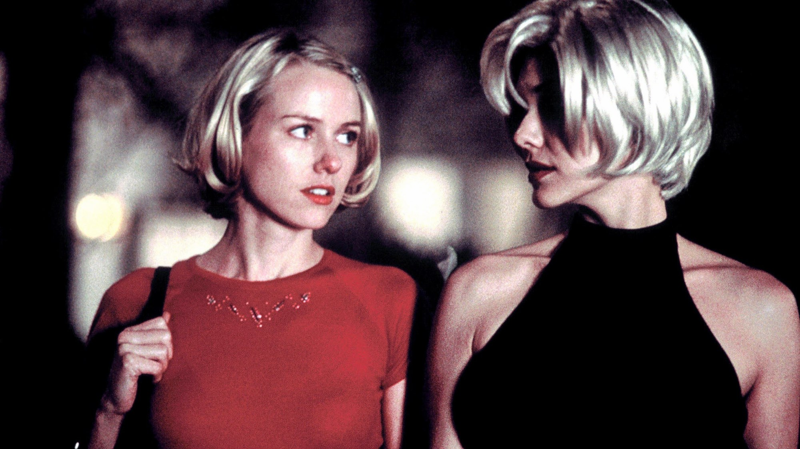
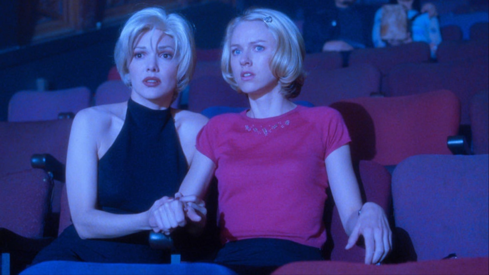
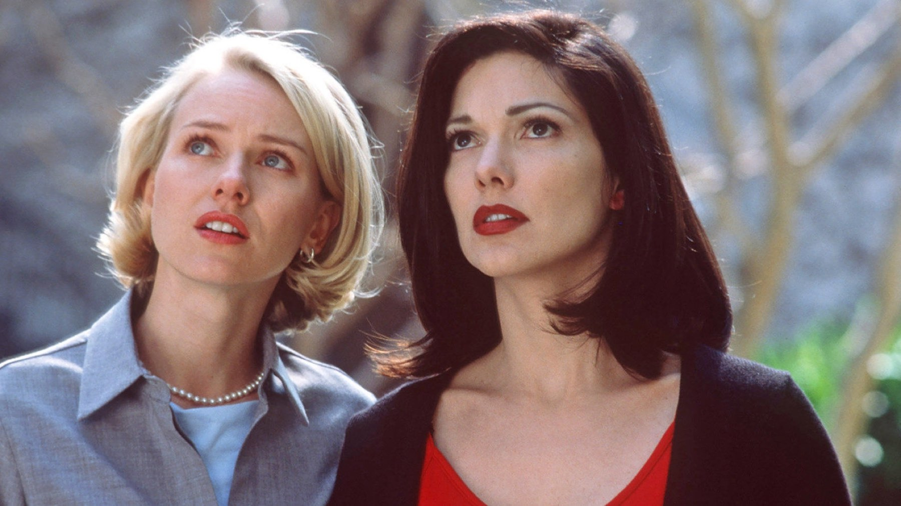
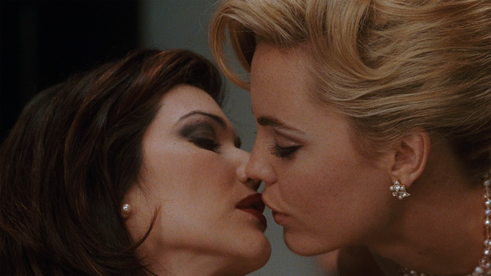

Mulholland Drive: il significato spiegato (spoiler)
Un pilota televisivo bocciato, un secondo film girato a posteriori e una chiave blu: come leggere il capolavoro di David Lynch
Una donna sopravvive a un incidente d'auto su una strada di Los Angeles e non ricorda più chi è. Poco dopo arriva in città una giovane attrice piena di speranza. Sembra l'inizio di un giallo classico e, per un'ora, Lynch ci lascia crederlo. Questa pagina spiega il significato e la struttura di Mulholland Drive e racconta cosa succede dopo: se non l'avete visto, tornate più tardi.
Il film in breve
Scritto e diretto da David Lynch, Mulholland Drive ha come protagoniste Naomi Watts, nei panni di Betty Elms e di Diane Selwyn, e Laura Harring, che è Rita e poi Camilla Rhodes. Accanto a loro Justin Theroux, Ann Miller, Robert Forster e Mark Pellegrino. Il film è stato presentato al festival di Cannes il 16 maggio 2001, dove Lynch ha diviso il premio per la regia con Joel Coen. Negli Stati Uniti è uscito il 12 ottobre 2001, in Italia il 15 febbraio 2002, ed è tornato nelle sale con Lucky Red il 24 novembre 2025, come indica MYmovies. Ha incassato 20,1 milioni di dollari nel mondo a fronte di 15 milioni di budget.

Un film nato da una bocciatura
Per capire perché il film sembra spezzato a metà conviene partire da come è nato. Le riprese cominciarono nel febbraio 1999: sei settimane a Los Angeles per un pilota di 90 minuti destinato alla ABC, con un budget di 7 milioni di dollari. La rete lo bocciò dopo aver visto un montaggio provvisorio, contestando ritmo, scelte di cast e contenuti. Nel 2000 Lynch ebbe il via libera per trasformarlo in un film grazie ad altri 7 milioni della società francese StudioCanal e girò a ottobre 2000 nuovo materiale, circa 18 pagine di sceneggiatura.
Il risultato spiega molto. La prima ora ha la struttura di una serie che promette di aprirsi in mille direzioni: personaggi minori, intrighi, un regista ricattato. Poi quelle strade restano chiuse. Per noi è la scelta più coraggiosa del film: invece di cucire i fili lasciati aperti, Lynch trasforma l'incompiutezza in tema.
Betty e Diane: il sogno e il risveglio
La lettura più condivisa, che anche Wikipedia riporta tra le principali, è questa: Betty è la versione ideale di Diane, un'attrice che a Hollywood non ce l'ha fatta. Nella prima parte Diane si immagina un'altra vita, in cui è talentuosa, amata e capace di aiutare la donna che desidera. Nella seconda parte la vita vera emerge: depressione, umiliazione, gelosia verso Camilla, che ora ha successo e sta con un altro. Il sogno, in questa chiave, è un meccanismo di difesa.
Il passaggio da una parte all'altra è la scatola blu. Dopo che Betty e Rita la aprono con la chiave blu, il racconto cambia e le stesse persone tornano con altri nomi e altri ruoli. Per Wikipedia questo è il perno che separa sogno e realtà. Noi aggiungiamo che Lynch non spiega il passaggio perché non può: è il momento in cui Diane smette di riuscire a mentire a sé stessa.

Le dieci domande di Lynch
Lynch non ha mai dato una chiave ufficiale. L'unica frase promozionale è stata «una storia d'amore nella città dei sogni». Al posto di una spiegazione ha offerto un elenco di dieci indizi da osservare, tra cui la lampada rossa, la chiave blu, le sensazioni nel Club Silencio e «l'uomo dietro Winkies». Per noi è la risposta più onesta possibile: Lynch non indica il significato, indica dove guardare.
Il Club Silencio è forse la scena più citata. Per noi è anche quella che dichiara il metodo del film: un presentatore ripete che tutto è registrato, che «non c'è banda», e una canzone struggente continua anche quando chi canta cade a terra. Tutto ciò che sembra emozione dal vivo è finzione, eppure ci commuove lo stesso. Betty e Rita piangono davanti a un trucco e questo, per un film su Hollywood, è quasi una confessione.

Perché non esiste una soluzione unica
Esistono altre letture. I personaggi che ricompaiono con ruoli diversi hanno fatto pensare anche a universi paralleli o a una psiche frammentata. Noi preferiamo la lettura del sogno perché spiega meglio le emozioni: il film funziona anche per chi non sa dire dove finisce la realtà, perché la tristezza di Diane arriva prima di qualsiasi teoria. Una spiegazione che ci è sembrata più debole è quella che chiede di incastrare ogni dettaglio: il film è costruito per sfuggire, non per quadrare.
Che cosa ha lasciato
Lynch fu candidato all'Oscar come miglior regista. Nel 2022 la classifica di Sight and Sound lo ha collocato all'ottavo posto tra i giudizi dei critici e al ventiduesimo tra quelli dei registi. Lo stesso articolo ricorda che è stato indicato come miglior film del XXI secolo in un sondaggio ripreso da BBC e IndieWire e che nel 2025 il New York Times lo ha messo al secondo posto tra i cento migliori film del secolo. Un film nato da un pilota bocciato è diventato uno dei più amati di tutti.
Dove vederlo
In Italia, a ottobre 2026, Mulholland Drive è su The Film Club, canale di Amazon. Si noleggia anche su Apple TV Store, Google Play Movies, Timvision e Rakuten TV. Le disponibilità cambiano spesso: conviene ricontrollare prima di guardarlo.
Il consiglio è vederlo due volte, a distanza di qualche giorno. La prima per perdersi, la seconda per accorgersi di quanto la prima ora fosse già piena di crepe: sguardi che durano troppo, sorrisi che non riescono. A noi, alla seconda visione, la parte più dolorosa è sembrata proprio quella più luminosa.
Mulholland Drive non è un enigma da risolvere ma un lutto da attraversare: il sogno di Diane è bellissimo perché sappiamo già che deve finire.
Domande frequenti
Qual è il significato di Mulholland Drive?
La lettura più diffusa è che la prima parte sia il sogno di Diane, un'attrice fallita che si immagina un'altra vita come Betty, e la seconda la realtà di depressione e gelosia da cui il sogno la protegge.
Cosa rappresenta la scatola blu?
È il punto di rottura del film: quando viene aperta il racconto cambia e ciò che era fantasia lascia il posto alla vita vera di Diane. Lynch non ha mai dato una spiegazione ufficiale.
Dove si vede Mulholland Drive in Italia?
A ottobre 2026 è su The Film Club, canale Amazon; si noleggia anche su Apple TV Store, Google Play Movies, Timvision e Rakuten TV.